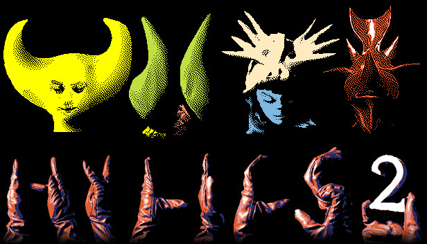

Art has always been something I wanted to learn, even though my hands seemed cursed to write badly and destroy things. My first success in art was in high school when I discovered that by shutting off my brain and choosing random color blends, I could create a canvas that everyone saw differently. It wasn't until last year during my summer semester that I learned the basics of art. After taking five art courses, I finally understood how to draw, shade, and tell a story through my art. My biggest inspirations come from animation and games, especially works by Genndy Tartakovsky and the Claymation game Hylics and Hylics 2. (Top image made by me.)
